tree_ebmfcov_diag
Annie Xie
2025-02-19
Last updated: 2025-02-21
Checks: 7 0
Knit directory: covariance_decomps_dsc/
This reproducible R Markdown analysis was created with workflowr (version 1.7.1). The Checks tab describes the reproducibility checks that were applied when the results were created. The Past versions tab lists the development history.
Great! Since the R Markdown file has been committed to the Git repository, you know the exact version of the code that produced these results.
Great job! The global environment was empty. Objects defined in the global environment can affect the analysis in your R Markdown file in unknown ways. For reproduciblity it’s best to always run the code in an empty environment.
The command set.seed(20250203) was run prior to running
the code in the R Markdown file. Setting a seed ensures that any results
that rely on randomness, e.g. subsampling or permutations, are
reproducible.
Great job! Recording the operating system, R version, and package versions is critical for reproducibility.
Nice! There were no cached chunks for this analysis, so you can be confident that you successfully produced the results during this run.
Great job! Using relative paths to the files within your workflowr project makes it easier to run your code on other machines.
Great! You are using Git for version control. Tracking code development and connecting the code version to the results is critical for reproducibility.
The results in this page were generated with repository version c054068. See the Past versions tab to see a history of the changes made to the R Markdown and HTML files.
Note that you need to be careful to ensure that all relevant files for
the analysis have been committed to Git prior to generating the results
(you can use wflow_publish or
wflow_git_commit). workflowr only checks the R Markdown
file, but you know if there are other scripts or data files that it
depends on. Below is the status of the Git repository when the results
were generated:
Ignored files:
Ignored: .DS_Store
Ignored: .Rhistory
Ignored: data/.DS_Store
Untracked files:
Untracked: analysis/tree_ebmfcov_greedy.Rmd
Untracked: analysis/tree_gbcd.Rmd
Untracked: analysis/tree_symnmf.Rmd
Untracked: data/baltree_4pop_1_gbcd_inputK_1.rds
Unstaged changes:
Modified: analysis/balanced_nonoverlapping_flash_normalf.Rmd
Note that any generated files, e.g. HTML, png, CSS, etc., are not included in this status report because it is ok for generated content to have uncommitted changes.
These are the previous versions of the repository in which changes were
made to the R Markdown (analysis/tree_ebmfcov_diag.Rmd) and
HTML (docs/tree_ebmfcov_diag.html) files. If you’ve
configured a remote Git repository (see ?wflow_git_remote),
click on the hyperlinks in the table below to view the files as they
were in that past version.
| File | Version | Author | Date | Message |
|---|---|---|---|---|
| Rmd | c054068 | Annie Xie | 2025-02-21 | Add analysis of EBMFcov in tree setting |
Introduction
In this analysis, we explore EBMFcov in the balanced tree setting.
Questions of Interest
This analysis is complementary to other analyses of methods in the tree setting. One reason I want to explore EBMFcov in this setting is because GBCD does very well in this setting. GBCD and EBMFcov are very similar methods – they both apply flashier in the covariance space. However, EBMFcov does not perform as well in the tree setting. By exploring EBMFcov, I’m hoping to gain insights into both methods.
library(dplyr)
library(ggplot2)
library(pheatmap)
library(flashier)source('code/visualization_functions.R')compute_L2_fit <- function(est, dat, with_diag = FALSE){
if (with_diag == FALSE){
score <- sum((dat - est)^2) - sum((diag(dat) - diag(est))^2)
}
else{
score <- sum((dat - est)^2)
}
return(score)
}EBMFcov (without backfitting)
baltree_4pop_1 <- readRDS("data/baltree_4pop_1.rds")
baltree_4pop_1_ebmfcov_1 <- readRDS("data/baltree_4pop_1_ebmfcov_diag_1.rds")Visualization of Estimate
This is a heatmap of the true \(L\) that we are hoping to recover:
plot_heatmap(baltree_4pop_1$true_L)
This is a heatmap of \(\hat{L}\), the estimate for \(L\) from EBMFcov (this estimate is not scaled):
plot_heatmap(baltree_4pop_1_ebmfcov_1$est_L, brks = seq(0, max(baltree_4pop_1_ebmfcov_1$est_L), length.out = 50))This is a scatterplot of the entries of \(\hat{L}\):
pops_vec <- c(rep('A', 40), rep('B', 40), rep('C', 40), rep('D', 40))
plot_loadings(baltree_4pop_1_ebmfcov_1$est_L, pops_vec)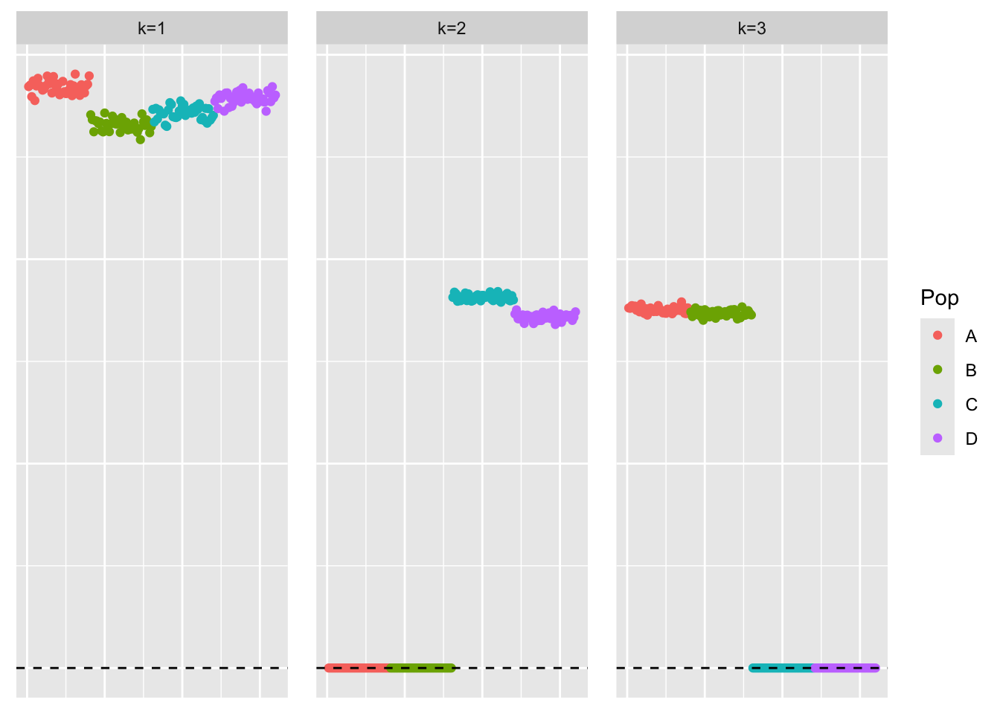
This is a heatmap of \(\hat{F}\) (we hope this is similar to \(\hat{L}\), up to a scaling):
plot_heatmap(baltree_4pop_1_ebmfcov_1$fit_obj$fl$F_pm, brks = seq(0, max(baltree_4pop_1_ebmfcov_1$fit_obj$fl$F_pm), length.out = 50))This is a scatterplot of the entries of \(\hat{F}\):
pops_vec <- c(rep('A', 40), rep('B', 40), rep('C', 40), rep('D', 40))
plot_loadings(baltree_4pop_1_ebmfcov_1$fit_obj$fl$F_pm, pops_vec)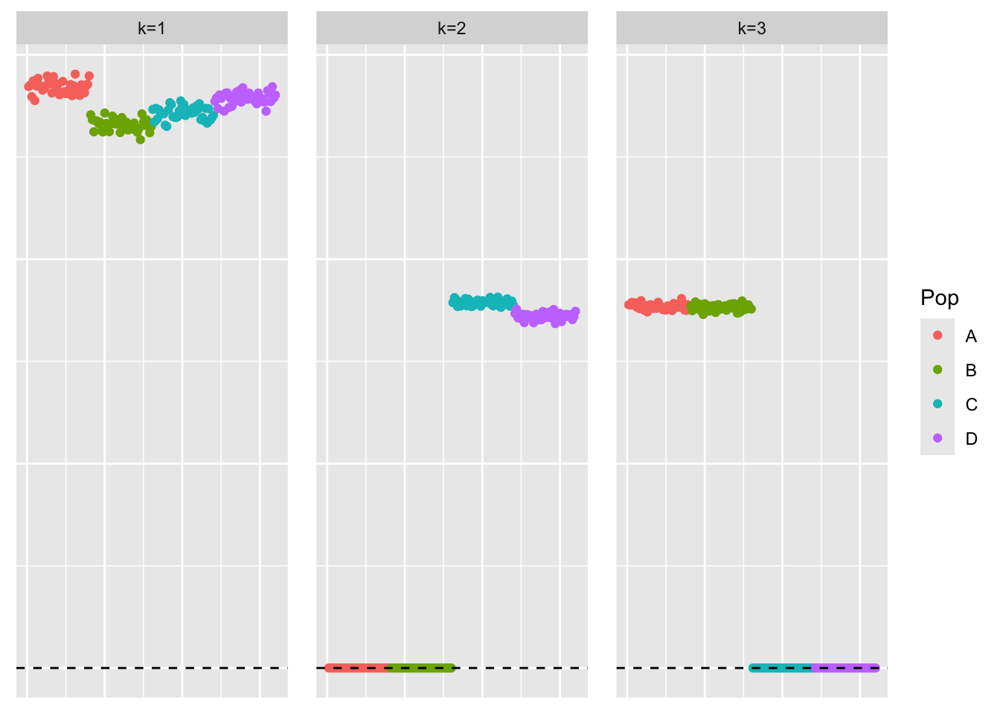
This is the estimate of the diagonal component:
baltree_4pop_1_ebmfcov_1$fit_obj$s2[1] 3.180925This is the estimate of the residual noise variance:
baltree_4pop_1_ebmfcov_1$fit_obj$fl$residuals_sd[1] 2.689546Visualizations related to fit
This is the true Gram matrix, \(\frac{1}{p}XX'\):
plot_heatmap(baltree_4pop_1$data$YYt, colors = c('blue','gray96', 'red'), brks = seq(-max(abs(baltree_4pop_1$data$YYt)), max(abs(baltree_4pop_1$data$YYt)), length.out = 50))
This is a heatmap of the estimate of the Gram matrix, \(\hat{L}\hat{L}'\) (the \(\hat{L}\) used here is scaled):
plot_heatmap(baltree_4pop_1_ebmfcov_1$est_LLt, brks = seq(0, max(baltree_4pop_1_ebmfcov_1$est_LLt), length.out = 50))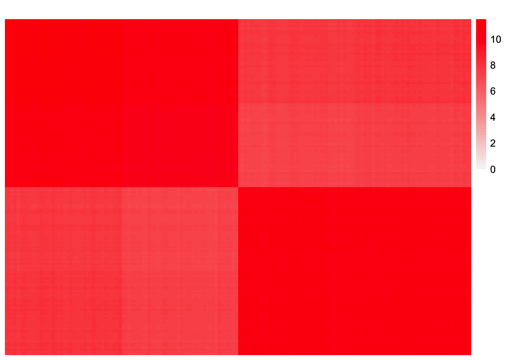
This is a scatter plot of the fitted values vs observed values:
ggplot(data = NULL, aes(x = c(baltree_4pop_1$data$YYt), y = c(baltree_4pop_1_ebmfcov_1$est_LLt))) + geom_point() + ylim(-1, 18) + xlim(-1,18) + xlab('Observed Values') + ylab('Fitted Values') + geom_abline(slope = 1, intercept = 0, color = 'red')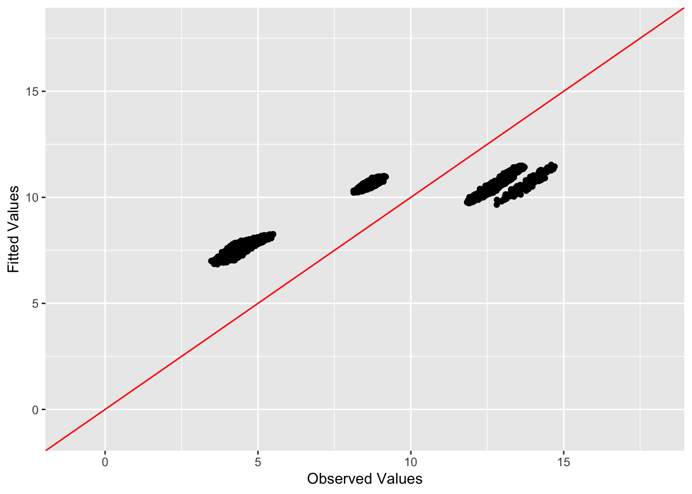
Let’s focus on the off-diagonal elements:
diag_idx <- seq(1, prod(dim(baltree_4pop_1$data$YYt)), length.out = ncol(baltree_4pop_1$data$YYt))
off_diag_idx <- setdiff(c(1:prod(dim(baltree_4pop_1$data$YYt))), diag_idx) ggplot(data = NULL, aes(x = c(baltree_4pop_1$data$YYt)[off_diag_idx], y = c(baltree_4pop_1_ebmfcov_1$est_LLt)[off_diag_idx])) + geom_point() + ylim(-1, 18) + xlim(-1,18) + xlab('Observed Values') + ylab('Fitted Values') + geom_abline(slope = 1, intercept = 0, color = 'red')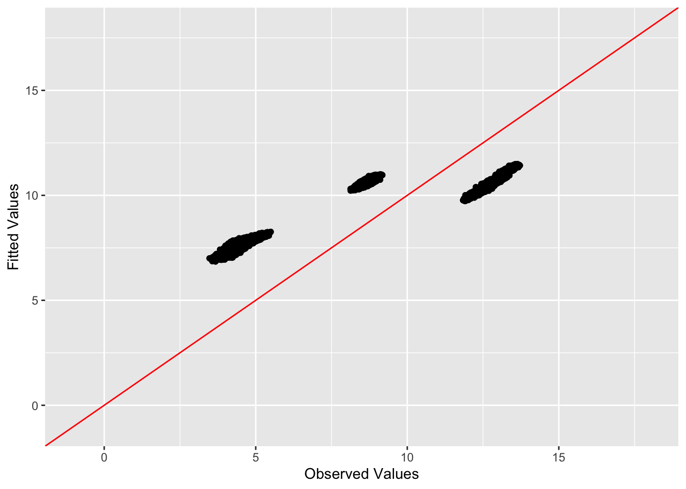
This is the L2-norm of the difference (not including the diagonal entries):
compute_L2_fit(baltree_4pop_1_ebmfcov_1$est_LLt, baltree_4pop_1$data$YYt)[1] 180466.9This is the elbo of the final flash fit:
baltree_4pop_1_ebmfcov_1$fit_obj$fl$elbo[1] -62014.99Observations
EBMFcov only returns three factors – one intercept factor and two factors corresponding to the two different subtypes. (I checked the EBMFcov estimates for all ten simulated tree datasets, and all the estimates had this structure). As a result, the estimate for the Gram matrix \(\hat{L} \hat{L}'\), is missing the four block components corresponding to group-specific effects. I’m not exactly sure where it stops adding new factors after three factors. Maybe the group-specific effects are getting lumped in with the residual noise?
Try initializing with true values
In this section, I try initializing EBMFcov with the true values and see if it returns an estimate similar to the true values.
cov_fit_true_init <- function(covmat, true_L, ebnm_fn = ebnm::ebnm_point_laplace, Kmax = 1000, verbose.lvl = 0) {
fl <- flash_init(covmat, var_type = 0) %>%
flash_factors_init(list(true_L, true_L), ebnm_fn = ebnm_fn)
s2 <- max(0, mean(diag(covmat) - diag(fitted(fl))))
s2_diff <- Inf
while(s2 > 0 && abs(s2_diff - 1) > 1e-4) {
covmat_minuss2 <- covmat - diag(rep(s2, ncol(covmat)))
fl <- flash_init(covmat_minuss2, var_type = 0) %>%
flash_set_verbose(verbose.lvl) %>%
flash_greedy(ebnm_fn = ebnm_fn, Kmax = Kmax)
old_s2 <- s2
s2 <- max(0, mean(diag(covmat) - diag(fitted(fl))))
s2_diff <- s2 / old_s2
}
return(list(fl = fl, s2 = s2))
}ebmfcov_true_init <- cov_fit_true_init(baltree_4pop_1$data$YYt, baltree_4pop_1$data$LL, ebnm_fn = ebnm::ebnm_generalized_binary, verbose.lvl = 2)Adding factor 1 to flash object...
Optimizing factor...
Factor successfully added. Objective: -68537.734
Adding factor 2 to flash object...
Optimizing factor...
Factor successfully added. Objective: -65860.175
Adding factor 3 to flash object...
Optimizing factor...
Factor successfully added. Objective: -62397.247
Adding factor 4 to flash object...Warning in scale.EF(EF): Fitting stopped after the initialization function
failed to find a non-zero factor. Optimizing factor...
Factor doesn't significantly increase objective and won't be added.
Wrapping up...
Done.
Adding factor 1 to flash object...
Optimizing factor...
Factor successfully added. Objective: -68461.897
Adding factor 2 to flash object...
Optimizing factor...
Factor successfully added. Objective: -65668.639
Adding factor 3 to flash object...
Optimizing factor...
Factor successfully added. Objective: -62011.637
Adding factor 4 to flash object...Warning in scale.EF(EF): Fitting stopped after the initialization function
failed to find a non-zero factor. Optimizing factor...
Factor doesn't significantly increase objective and won't be added.
Wrapping up...
Done.
Adding factor 1 to flash object...
Optimizing factor...
Factor successfully added. Objective: -68465.981
Adding factor 2 to flash object...
Optimizing factor...
Factor successfully added. Objective: -65672.439
Adding factor 3 to flash object...
Optimizing factor...
Factor successfully added. Objective: -62014.951
Adding factor 4 to flash object...Warning in scale.EF(EF): Fitting stopped after the initialization function
failed to find a non-zero factor. Optimizing factor...
Factor doesn't significantly increase objective and won't be added.
Wrapping up...
Done.
Adding factor 1 to flash object...
Optimizing factor...
Factor successfully added. Objective: -68466.033
Adding factor 2 to flash object...
Optimizing factor...
Factor successfully added. Objective: -65672.488
Adding factor 3 to flash object...
Optimizing factor...
Factor successfully added. Objective: -62014.994
Adding factor 4 to flash object...Warning in scale.EF(EF): Fitting stopped after the initialization function
failed to find a non-zero factor. Optimizing factor...
Factor doesn't significantly increase objective and won't be added.
Wrapping up...
Done.Visualization of Estimate
This is a heatmap of \(\hat{L}_{true-init}\):
plot_heatmap(ebmfcov_true_init$fl$L_pm, brks = seq(0, max(ebmfcov_true_init$fl$L_pm), length.out = 50))This is a scatterplot of the entries of \(\hat{L}_{true-init}\):
pops_vec <- c(rep('A', 40), rep('B', 40), rep('C', 40), rep('D', 40))
plot_loadings(ebmfcov_true_init$fl$L_pm, pops_vec)This is a heatmap of \(\hat{F}_{true-init}\):
plot_heatmap(ebmfcov_true_init$fl$F_pm, brks = seq(0, max(ebmfcov_true_init$fl$F_pm), length.out = 50))This is a scatterplot of the entries of \(\hat{F}_{true-init}\):
pops_vec <- c(rep('A', 40), rep('B', 40), rep('C', 40), rep('D', 40))
plot_loadings(ebmfcov_true_init$fl$F_pm, pops_vec)Observations
Even when initializing with the true values, EBMFcov yielded the same estimate. This was pretty surprising to me because GBCD initialized with the true values returns a loadings estimate that looks like a tree. Given the similarity between the methods, I expected EBMFcov to do the same. Therefore, I more closely compared the GBCD code with the EBMFcov code.
Comparing GBCD to EBMFcov
Both EBMFcov and GBCD alternate between estimating the diagonal component \(s^2\) and fitting flash to \(XX' - s^2I_n\). In the iterative process, when EBMFcov is fitting flash to \(XX' - s^2I_n\), it creates a new flash object from scratch; it initializes the flash object and does the greedy procedure (and can potentially backfit). On the other hand, GBCD maintains the flash object and instead updates the data in each iteration. Therefore, I edited the EBMFcov to match the GBCD updates. In this code, we also initialize from the true values.
cov_fit_true_init_v2 <- function(covmat, true_L, ebnm_fn = ebnm::ebnm_point_laplace, Kmax = 1000, verbose.lvl = 0) {
fl <- flash_init(covmat, var_type = 0) %>%
flash_factors_init(list(true_L, true_L), ebnm_fn = ebnm_fn)
s2 <- max(0, mean(diag(covmat) - diag(fitted(fl))))
s2_diff <- Inf
while(s2 > 0 && abs(s2_diff - 1) > 1e-4) {
covmat_minuss2 <- covmat - diag(rep(s2, ncol(covmat)))
fl <- fl %>%
flash_update_data(covmat_minuss2) %>%
flash_set_verbose(verbose.lvl) %>%
flash_backfit()
old_s2 <- s2
s2 <- max(0, mean(diag(covmat) - diag(fitted(fl))))
s2_diff <- s2 / old_s2
}
return(list(fl=fl, s2 = s2))
}ebmfcov_true_init2 <- cov_fit_true_init_v2(baltree_4pop_1$data$YYt, baltree_4pop_1$data$LL, ebnm_fn = ebnm::ebnm_generalized_binary, verbose.lvl = 2)Backfitting 7 factors (tolerance: 3.81e-04)...
Difference between iterations is within 1.0e+04...
Difference between iterations is within 1.0e+03...
Difference between iterations is within 1.0e+02...
Difference between iterations is within 1.0e+01...
Difference between iterations is within 1.0e+00...
Difference between iterations is within 1.0e-01...
Difference between iterations is within 1.0e-02...
Difference between iterations is within 1.0e-03...
Difference between iterations is within 1.0e-04...
Backfit complete. Objective: -31668.941
Wrapping up...
Done.
Backfitting 7 factors (tolerance: 3.81e-04)...
Difference between iterations is within 1.0e+04...
Difference between iterations is within 1.0e+03...
Difference between iterations is within 1.0e+02...
Difference between iterations is within 1.0e+01...
Difference between iterations is within 1.0e+00...
Difference between iterations is within 1.0e-01...
Difference between iterations is within 1.0e-02...
Difference between iterations is within 1.0e-03...
Backfit complete. Objective: 32678.845
Wrapping up...
Done.
Backfitting 7 factors (tolerance: 3.81e-04)...
Difference between iterations is within 1.0e+01...
Difference between iterations is within 1.0e+00...
Difference between iterations is within 1.0e-01...
Difference between iterations is within 1.0e-02...
Difference between iterations is within 1.0e-03...
Backfit complete. Objective: 35583.924
Wrapping up...
Done.
Backfitting 7 factors (tolerance: 3.81e-04)...
Difference between iterations is within 1.0e-02...
Difference between iterations is within 1.0e-03...
Backfit complete. Objective: 35585.780
Wrapping up...
Done.
Backfitting 7 factors (tolerance: 3.81e-04)...
Backfit complete. Objective: 35585.781
Wrapping up...
Done.Visualization of Estimate
This is a heatmap of \(\hat{L}_{true-init2}\):
plot_heatmap(ebmfcov_true_init2$fl$L_pm, brks = seq(0, max(ebmfcov_true_init2$fl$L_pm), length.out = 50))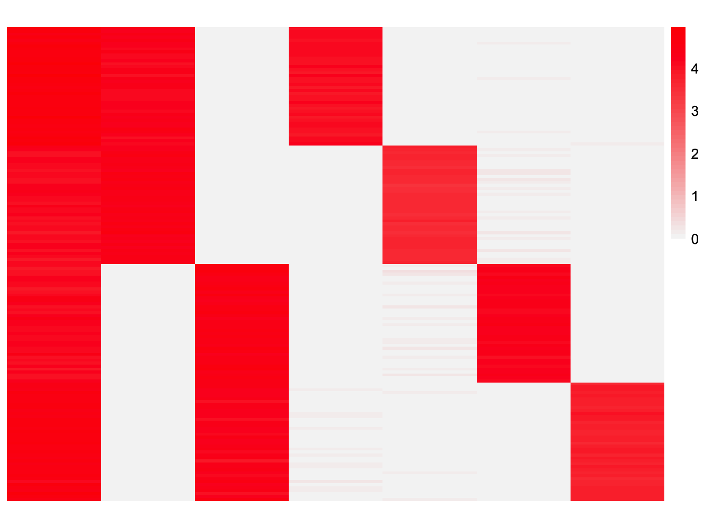
This is a scatterplot of the entries of \(\hat{L}_{true-init2}\):
pops_vec <- c(rep('A', 40), rep('B', 40), rep('C', 40), rep('D', 40))
plot_loadings(ebmfcov_true_init2$fl$L_pm, pops_vec)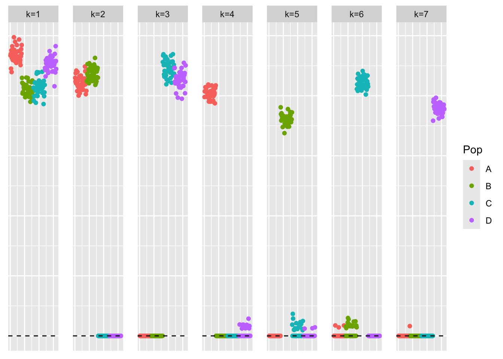
This is a heatmap of \(\hat{F}_{true-init2}\):
plot_heatmap(ebmfcov_true_init2$fl$F_pm, brks = seq(0, max(ebmfcov_true_init2$fl$F_pm), length.out = 50))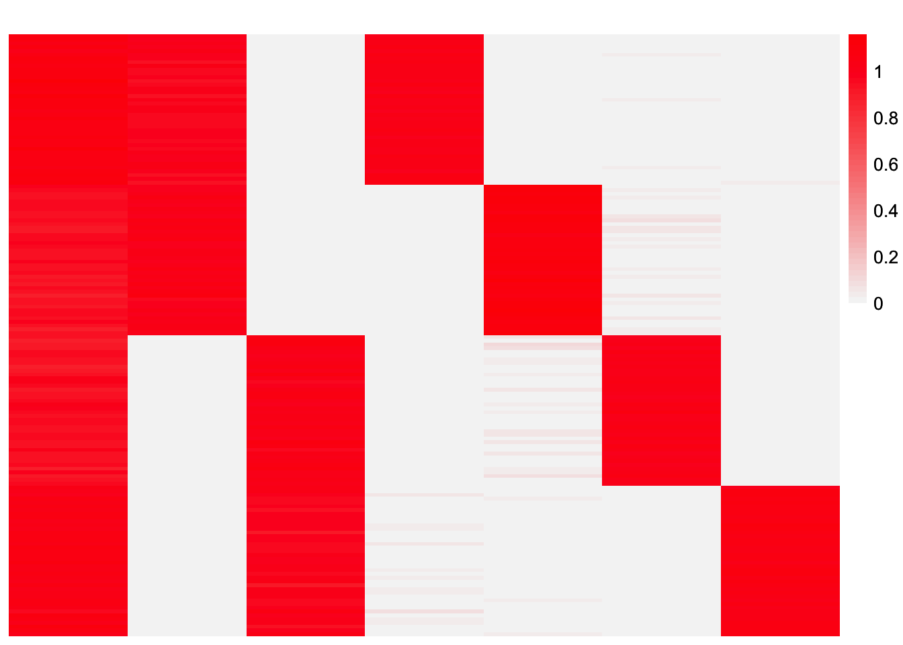
This is a scatterplot of the entries of \(\hat{F}_{true-init2}\):
pops_vec <- c(rep('A', 40), rep('B', 40), rep('C', 40), rep('D', 40))
plot_loadings(ebmfcov_true_init2$fl$F_pm, pops_vec)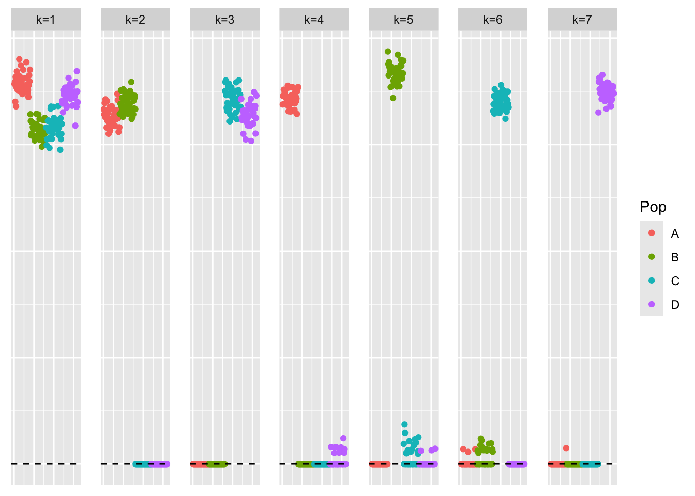
Visualizations related to fit
scaled_ebmfcov_true_init2 <- ldf(ebmfcov_true_init2$fl)
scaled_ebmfcov_true_init2_L <- scaled_ebmfcov_true_init2$L %*% diag(sqrt(scaled_ebmfcov_true_init2$D))
scaled_ebmfcov_true_init2_estLLt <- tcrossprod(scaled_ebmfcov_true_init2_L)This is a heatmap of the estimate of the Gram matrix, \(\hat{L}_{true-init2}\hat{L}_{true-init2}'\) (the \(\hat{L}_{true-init2}\) used here is scaled):
plot_heatmap(scaled_ebmfcov_true_init2_estLLt, brks = seq(0, max(scaled_ebmfcov_true_init2_estLLt), length.out = 50))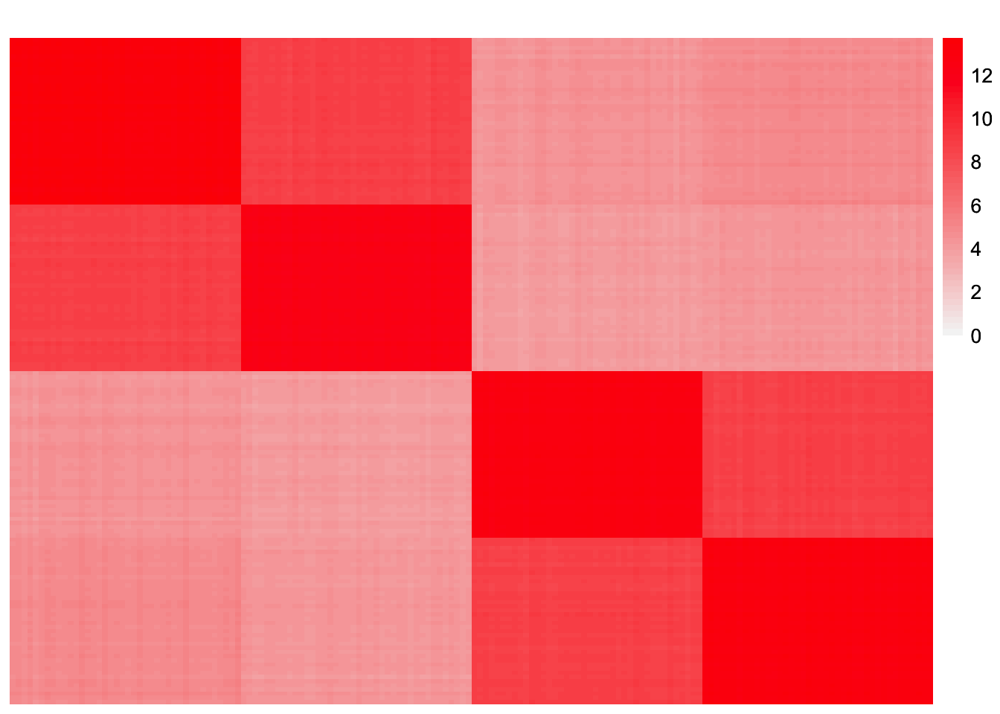
This is a scatter plot of the fitted values vs observed values:
ggplot(data = NULL, aes(x = c(baltree_4pop_1$data$YYt), y = c(scaled_ebmfcov_true_init2_estLLt))) + geom_point() + ylim(-1, 18) + xlim(-1,18) + xlab('Observed Values') + ylab('Fitted Values') + geom_abline(slope = 1, intercept = 0, color = 'red')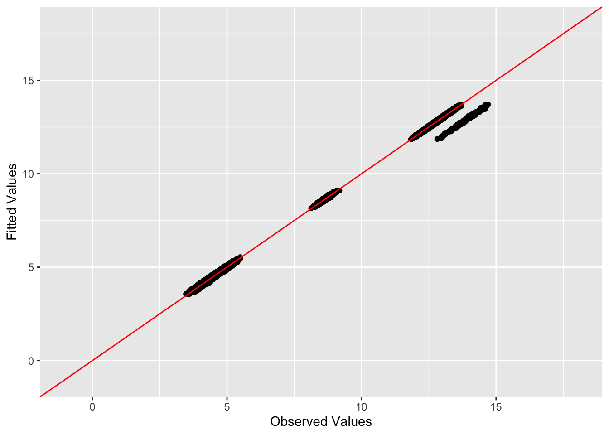
Let’s focus on the off-diagonal elements:
diag_idx <- seq(1, prod(dim(baltree_4pop_1$data$YYt)), length.out = ncol(baltree_4pop_1$data$YYt))
off_diag_idx <- setdiff(c(1:prod(dim(baltree_4pop_1$data$YYt))), diag_idx) ggplot(data = NULL, aes(x = c(baltree_4pop_1$data$YYt)[off_diag_idx], y = c(scaled_ebmfcov_true_init2_estLLt)[off_diag_idx])) + geom_point() + ylim(-1, 18) + xlim(-1,18) + xlab('Observed Values') + ylab('Fitted Values') + geom_abline(slope = 1, intercept = 0, color = 'red')
This is the L2-norm of the difference (not including the diagonal entries):
compute_L2_fit(scaled_ebmfcov_true_init2_estLLt, baltree_4pop_1$data$YYt)[1] 43.04704This is the elbo of the final flash fit:
ebmfcov_true_init2$fl$elbo[1] 35585.78Observations
This new version of EBMFcov initialized with the true values does yield an estimate that looks like a tree. There’s one intercept-like factor, two subtype factors, and four group effect factors. The estimate \(\hat{L}_{true-init2} \hat{L}_{true-init2}'\) is much closer to the observed Gram matrix. Furthermore, the elbo for the final flash fit is higher. This suggests that the objective function prefers this solution to the one originally found by EBMFcov. In addition, the change from using the greedy procedure to just updating the data matrix makes me think that the greedy procedure generally does not perform well in this setting.
Testing EBMFcov on a larger tree
Previously, I mentioned that maybe flashier was lumping the group effects into the residual noise. Therefore, I wanted to test EBMFcov on a larger tree to see if it picks up the other subtype effects. In this section, we simulate a balanced 8 population tree
cov_fit <- function(covmat, ebnm_fn = ebnm::ebnm_point_laplace, Kmax = 1000, verbose.lvl = 0) {
fl <- flash_init(covmat, var_type = 0) %>%
flash_set_verbose(verbose.lvl) %>%
flash_greedy(ebnm_fn = ebnm_fn, Kmax = Kmax)
s2 <- max(0, mean(diag(covmat) - diag(fitted(fl))))
s2_diff <- Inf
while(s2 > 0 && abs(s2_diff - 1) > 1e-4) {
covmat_minuss2 <- covmat - diag(rep(s2, ncol(covmat)))
fl <- flash_init(covmat_minuss2, var_type = 0) %>%
flash_set_verbose(verbose.lvl) %>%
flash_greedy(ebnm_fn = ebnm_fn, Kmax = Kmax)
old_s2 <- s2
s2 <- max(0, mean(diag(covmat) - diag(fitted(fl))))
s2_diff <- s2 / old_s2
}
return(list(fl=fl, s2 = s2))
}sim_8pops <- function(args) {
set.seed(args$seed)
n <- sum(args$pop_sizes)
p <- args$n_genes
FF <- matrix(rnorm(15 * p, sd = rep(args$branch_sds, each = p)), ncol = 15)
# if (args$constrain_F) {
# FF_svd <- svd(FF)
# FF <- FF_svd$u
# FF <- t(t(FF) * branch_sds * sqrt(p))
# }
LL <- matrix(0, nrow = n, ncol = 15)
LL[, 1] <- 1
LL[, 2] <- rep(c(1, 1, 1, 1, 0, 0, 0, 0), times = args$pop_sizes)
LL[, 3] <- rep(c(0, 0, 0, 0, 1, 1, 1, 1), times = args$pop_sizes)
LL[, 4] <- rep(c(1, 1, 0, 0, 0, 0, 0, 0), times = args$pop_sizes)
LL[, 5] <- rep(c(0, 0, 1, 1, 0, 0, 0, 0), times = args$pop_sizes)
LL[, 6] <- rep(c(0, 0, 0, 0, 1, 1, 0, 0), times = args$pop_sizes)
LL[, 7] <- rep(c(0, 0, 0, 0, 0, 0, 1, 1), times = args$pop_sizes)
LL[, 8] <- rep(c(1, 0, 0, 0, 0, 0, 0, 0), times = args$pop_sizes)
LL[, 9] <- rep(c(0, 1, 0, 0, 0, 0, 0, 0), times = args$pop_sizes)
LL[, 10] <- rep(c(0, 0, 1, 0, 0, 0, 0, 0), times = args$pop_sizes)
LL[, 11] <- rep(c(0, 0, 0, 1, 0, 0, 0, 0), times = args$pop_sizes)
LL[, 12] <- rep(c(0, 0, 0, 0, 1, 0, 0, 0), times = args$pop_sizes)
LL[, 13] <- rep(c(0, 0, 0, 0, 0, 1, 0, 0), times = args$pop_sizes)
LL[, 14] <- rep(c(0, 0, 0, 0, 0, 0, 1, 0), times = args$pop_sizes)
LL[, 15] <- rep(c(0, 0, 0, 0, 0, 0, 0, 1), times = args$pop_sizes)
E <- matrix(rnorm(n * p, sd = args$indiv_sd), nrow = n)
Y <- LL %*% t(FF) + E
YYt <- (1/p)*tcrossprod(Y)
return(list(Y = Y, YYt = YYt, LL = LL, FF = FF, K = ncol(LL)))
}sim_args <- list(seed = 1, pop_sizes = rep(40,8), n_genes = 1000, branch_sds = rep(2,15), indiv_sd = 1)
baltree_8pop_1 <- sim_8pops(sim_args)baltree_8pop_1_ebmfcov_1 <- cov_fit(baltree_8pop_1$YYt, ebnm::ebnm_generalized_binary, Kmax = 15, verbose.lvl = 2)Adding factor 1 to flash object...
Optimizing factor...
Factor successfully added. Objective: -298351.815
Adding factor 2 to flash object...
Optimizing factor...
Factor successfully added. Objective: -289098.231
Adding factor 3 to flash object...
Optimizing factor...
Factor successfully added. Objective: -277290.400
Adding factor 4 to flash object...Warning in scale.EF(EF): Fitting stopped after the initialization function
failed to find a non-zero factor. Optimizing factor...
Factor doesn't significantly increase objective and won't be added.
Wrapping up...
Done.
Adding factor 1 to flash object...
Optimizing factor...
Factor successfully added. Objective: -297680.774
Adding factor 2 to flash object...
Optimizing factor...
Factor successfully added. Objective: -288398.818
Adding factor 3 to flash object...
Optimizing factor...
Factor successfully added. Objective: -276545.480
Adding factor 4 to flash object...Warning in scale.EF(EF): Fitting stopped after the initialization function
failed to find a non-zero factor. Optimizing factor...
Factor doesn't significantly increase objective and won't be added.
Wrapping up...
Done.
Adding factor 1 to flash object...
Optimizing factor...
Factor successfully added. Objective: -297678.482
Adding factor 2 to flash object...
Optimizing factor...
Factor successfully added. Objective: -288396.736
Adding factor 3 to flash object...
Optimizing factor...
Factor successfully added. Objective: -276543.727
Adding factor 4 to flash object...Warning in scale.EF(EF): Fitting stopped after the initialization function
failed to find a non-zero factor. Optimizing factor...
Factor doesn't significantly increase objective and won't be added.
Wrapping up...
Done.Visualization of Estimate
This is a heatmap of the true \(L\) that we are hoping to recover:
plot_heatmap(baltree_8pop_1$LL)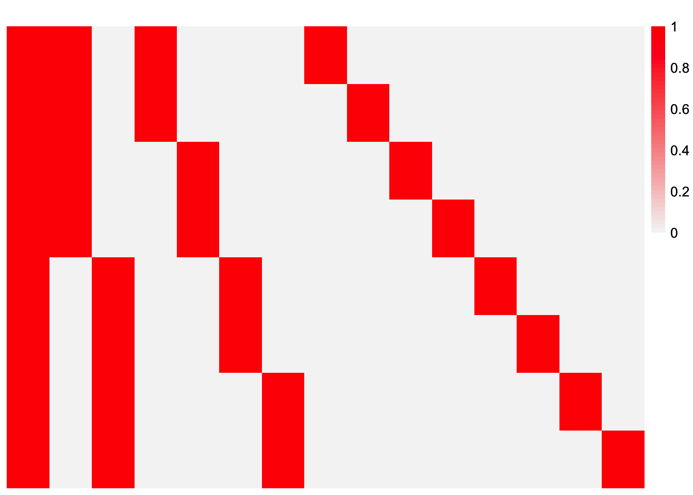
This is a heatmap of \(\hat{L}_{8pop}\):
plot_heatmap(baltree_8pop_1_ebmfcov_1$fl$L_pm, brks = seq(0, max(baltree_8pop_1_ebmfcov_1$fl$L_pm), length.out = 50))This is a scatterplot of the entries of \(\hat{L}_{8pop}\):
pops_vec <- c(rep('A', 40), rep('B', 40), rep('C', 40), rep('D', 40), rep('E', 40), rep('F', 40), rep('G', 40), rep('H', 40))
plot_loadings(baltree_8pop_1_ebmfcov_1$fl$L_pm, pops_vec)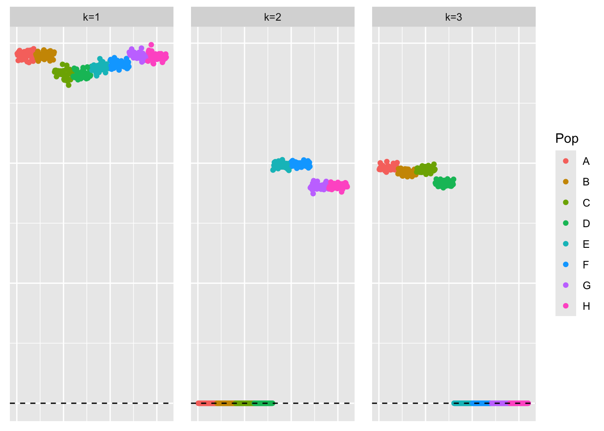
This is a heatmap of \(\hat{F}_{8pop}\):
plot_heatmap(baltree_8pop_1_ebmfcov_1$fl$F_pm, brks = seq(0, max(baltree_8pop_1_ebmfcov_1$fl$F_pm), length.out = 50))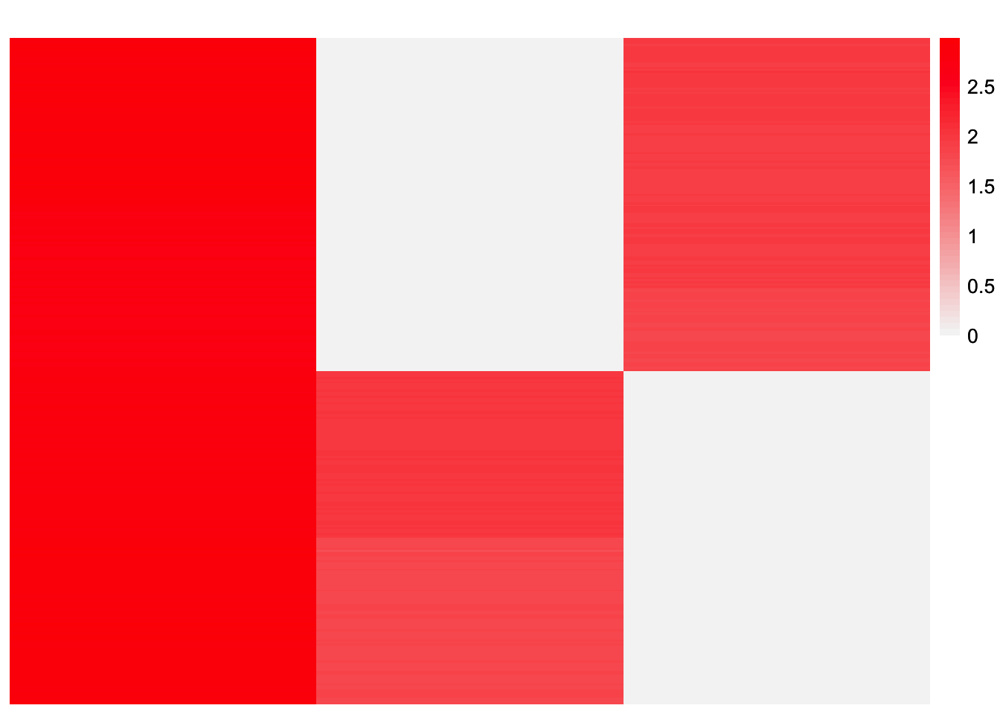
This is a scatterplot of the entries of \(\hat{F}_{8pop}\):
pops_vec <- c(rep('A', 40), rep('B', 40), rep('C', 40), rep('D', 40), rep('E', 40), rep('F', 40), rep('G', 40), rep('H', 40))
plot_loadings(baltree_8pop_1_ebmfcov_1$fl$F_pm, pops_vec)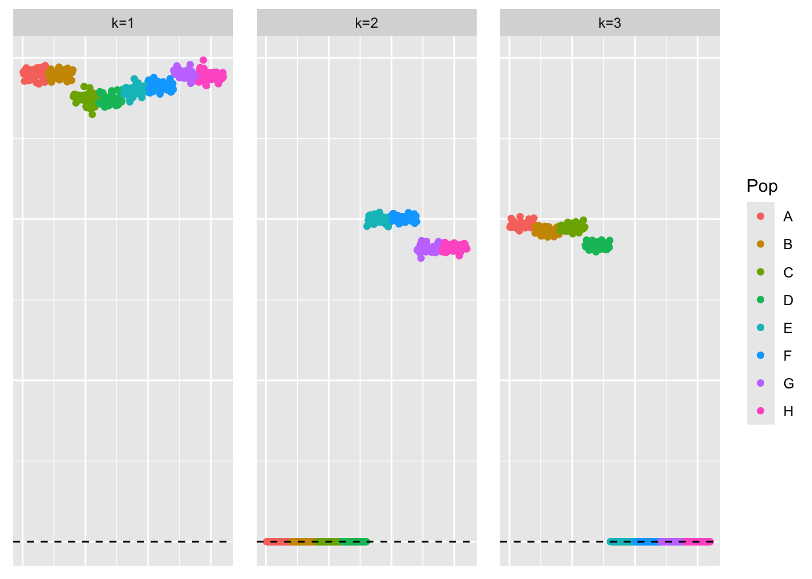
Observations
In this setting, EBMFcov also returns an estimate with only three factors – one intercept factor and two factors corresponding to the largest subtypes. In another analysis file, I explore the greedy procedure on tree data. Hopefully that exploration can give us insight into why EBMFcov only fits three factors in this setting.
sessionInfo()R version 4.3.2 (2023-10-31)
Platform: aarch64-apple-darwin20 (64-bit)
Running under: macOS Sonoma 14.4.1
Matrix products: default
BLAS: /Library/Frameworks/R.framework/Versions/4.3-arm64/Resources/lib/libRblas.0.dylib
LAPACK: /Library/Frameworks/R.framework/Versions/4.3-arm64/Resources/lib/libRlapack.dylib; LAPACK version 3.11.0
locale:
[1] en_US.UTF-8/en_US.UTF-8/en_US.UTF-8/C/en_US.UTF-8/en_US.UTF-8
time zone: America/Chicago
tzcode source: internal
attached base packages:
[1] stats graphics grDevices utils datasets methods base
other attached packages:
[1] flashier_1.0.53 ebnm_1.1-34 pheatmap_1.0.12 ggplot2_3.5.1
[5] dplyr_1.1.4 workflowr_1.7.1
loaded via a namespace (and not attached):
[1] tidyselect_1.2.1 viridisLite_0.4.2 farver_2.1.2
[4] fastmap_1.2.0 lazyeval_0.2.2 promises_1.3.0
[7] digest_0.6.37 lifecycle_1.0.4 processx_3.8.4
[10] invgamma_1.1 magrittr_2.0.3 compiler_4.3.2
[13] rlang_1.1.4 sass_0.4.9 progress_1.2.3
[16] tools_4.3.2 utf8_1.2.4 yaml_2.3.10
[19] data.table_1.16.0 knitr_1.48 labeling_0.4.3
[22] prettyunits_1.2.0 htmlwidgets_1.6.4 scatterplot3d_0.3-44
[25] RColorBrewer_1.1-3 Rtsne_0.17 withr_3.0.1
[28] purrr_1.0.2 grid_4.3.2 fansi_1.0.6
[31] git2r_0.33.0 fastTopics_0.6-192 colorspace_2.1-1
[34] scales_1.3.0 gtools_3.9.5 cli_3.6.3
[37] rmarkdown_2.28 crayon_1.5.3 generics_0.1.3
[40] RcppParallel_5.1.9 rstudioapi_0.16.0 httr_1.4.7
[43] pbapply_1.7-2 cachem_1.1.0 stringr_1.5.1
[46] splines_4.3.2 parallel_4.3.2 softImpute_1.4-1
[49] vctrs_0.6.5 Matrix_1.6-5 jsonlite_1.8.9
[52] callr_3.7.6 hms_1.1.3 mixsqp_0.3-54
[55] ggrepel_0.9.6 irlba_2.3.5.1 horseshoe_0.2.0
[58] trust_0.1-8 plotly_4.10.4 jquerylib_0.1.4
[61] tidyr_1.3.1 glue_1.8.0 ps_1.7.7
[64] uwot_0.1.16 cowplot_1.1.3 stringi_1.8.4
[67] Polychrome_1.5.1 gtable_0.3.5 later_1.3.2
[70] quadprog_1.5-8 munsell_0.5.1 tibble_3.2.1
[73] pillar_1.9.0 htmltools_0.5.8.1 truncnorm_1.0-9
[76] R6_2.5.1 rprojroot_2.0.4 evaluate_1.0.0
[79] lattice_0.22-6 highr_0.11 RhpcBLASctl_0.23-42
[82] SQUAREM_2021.1 ashr_2.2-66 httpuv_1.6.15
[85] bslib_0.8.0 Rcpp_1.0.13 deconvolveR_1.2-1
[88] whisker_0.4.1 xfun_0.48 fs_1.6.4
[91] getPass_0.2-4 pkgconfig_2.0.3